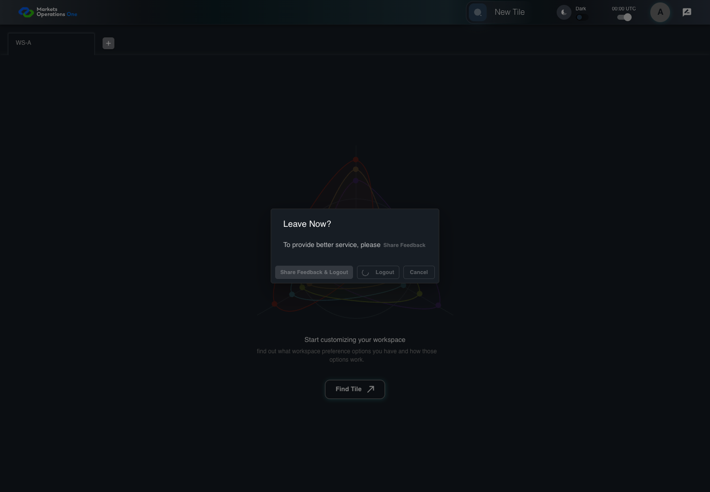
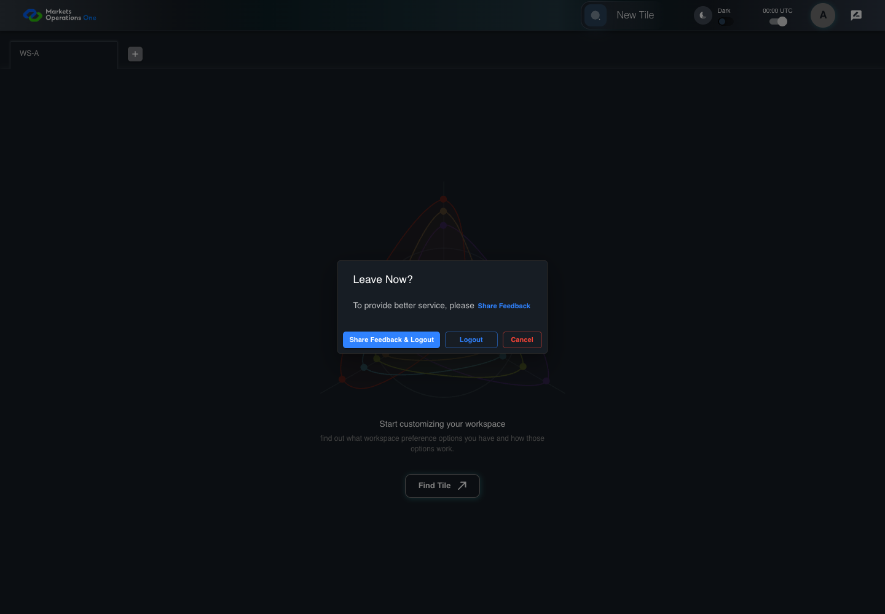
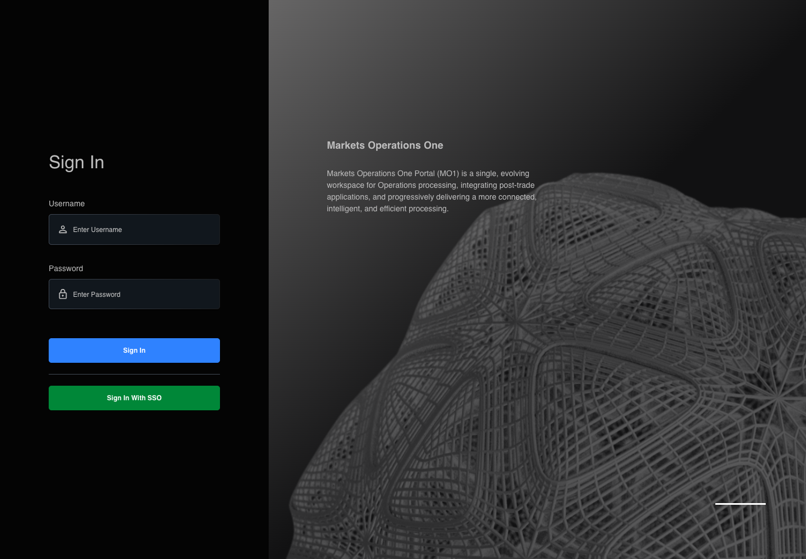

All canonical cases
AUTH-106: Finish logout when feedback popup is blocked Business acceptance remains unverified. Owner: unknown. Review the canonical definition and fixture limits before acceptance.
Latest local result: PASS Business acceptance: NOT_ESTABLISHED.
The latest local result describes execution. The historical definition review assesses the case design before execution.
Latest step screenshot evidence: COMPLETE . 11/11 canonical steps have execution screenshots.
Canonical Gherkin definition . Definition version: 2. SHA-256: 4a19267e0fd97b57653269fc17cf66842fae7c6d114501c2f3bf1ad3fac17266.
Historical definition review (preflight): UNVERIFIED A definition review FAIL can coexist with local PASS. The definition failed preflight quality checks.
This historical review does not change the latest execution result. Resolve definition gaps before business acceptance.
Canonical Gherkin steps Feature: Logout
@AUTH-106
Scenario: Finish logout when feedback popup is blocked
Given User A is authenticated as user-a in an isolated browser context
And the selected fixture tab is labelled "WS-A" inside the tablist named "workspaces" on the Home page
And the dialog named "Leave Now?" on the Home page is visible
And the browser blocks popup creation
When User A clicks the button labelled "Share Feedback & Logout" inside the dialog named "Leave Now?" on the Home page
And the controlled browser clock advances through the 1000-millisecond logout delay
Then the textbox with placeholder "Enter Username" on the login page is visible
And the text input with placeholder "Enter Password" on the login page is visible
And the button labelled "Sign In" on the login page is visible
And the tablist named "workspaces" on the Home page is absent
And the installed access credential is absent Acceptance and evidence limits: NO_COMPLETE_REAL_APPLICATION_BINDING, CANONICAL_REVIEW_OR_EVIDENCE_UNRESOLVED.
Planned essential canonical frames: 2. Plan completeness requires separate review.
Latest attempt AUTH-106 feedback popup boundary PASS · application/run-050/auth-106-feedback-popup-boundary-7d052e0de1cb-attempt-1 · ACTUAL_APPLICATION_LOCAL_SERVICES
Actual MFE with controlled HTTP responses, clock, visibility and popup boundary. Browser-only unsigned credentials. No real provider or server security acceptance.
2026-10-22T06:04:43.864Z to 2026-10-22T06:04:48.760Z
Assertions and result · Artifact manifest · Exact run inputs and source hashes
Result SHA-256: c2a466d6d0bf34151cc0d020c8396a239437201867f34a4443f013e857d3c1e5 Playwright trace
Machine observations Screenshot capture: CAPTURED. Named frames: 12.
Step screenshot evidence: COMPLETE. 11/11 canonical steps have execution screenshots.
Canonical step timeline Given User A is authenticated as user-a in an isolated browser context
1. step-01 Visible state after step 1: Given User A is authenticated as user-a in an isolated browser context
2026-10-22T06:04:45.740Z · 1440×10000712c3f55455954e6d35b836023a1f2355851f08e119e269da9cda84dc0bcfd4 And the selected fixture tab is labelled "WS-A" inside the tablist named "workspaces" on the Home page
2. step-02 Visible state after step 2: And the selected fixture tab is labelled "WS-A" inside the tablist named "workspaces" on the Home page
2026-10-22T06:04:45.852Z · 1440×10000712c3f55455954e6d35b836023a1f2355851f08e119e269da9cda84dc0bcfd4 And the dialog named "Leave Now?" on the Home page is visible
3. step-03 Visible state after step 3: And the dialog named "Leave Now?" on the Home page is visible
2026-10-22T06:04:46.114Z · 1440×1000ffb5759fb14c0a0ebd8ee17cec7bbb802ee56eb815c5570723b9cf87b7a3dc44 And the browser blocks popup creation
4. step-04 Visible state after step 4: And the browser blocks popup creation
2026-10-22T06:04:46.187Z · 1440×1000ffb5759fb14c0a0ebd8ee17cec7bbb802ee56eb815c5570723b9cf87b7a3dc44 When User A clicks the button labelled "Share Feedback & Logout" inside the dialog named "Leave Now?" on the Home page

5. step-05 Visible state after step 5: When User A clicks the button labelled "Share Feedback & Logout" inside the dialog named "Leave Now?" on the Home page
2026-10-22T06:04:46.319Z · 1440×1000a60590670e05b30f4fcab6df46fd07d285504c08e384d00f386c9d36b5689085 And the controlled browser clock advances through the 1000-millisecond logout delay
6. step-06 Visible state after step 6: And the controlled browser clock advances through the 1000-millisecond logout delay
2026-10-22T06:04:46.734Z · 1440×100059c4e063cab140c3f713f0512ac90aebc5ae2dd3932cddd7e50e5f5f00d57386 Then the textbox with placeholder "Enter Username" on the login page is visible
7. step-07 Visible state after step 7: Then the textbox with placeholder "Enter Username" on the login page is visible
2026-10-22T06:04:46.967Z · 1440×100099567bb3808af958792a6b38879d848938c08b417fb7dfff75bde75fcbd51a3a And the text input with placeholder "Enter Password" on the login page is visible
8. step-08 Visible state after step 8: And the text input with placeholder "Enter Password" on the login page is visible
2026-10-22T06:04:47.246Z · 1440×100099567bb3808af958792a6b38879d848938c08b417fb7dfff75bde75fcbd51a3a And the button labelled "Sign In" on the login page is visible
9. step-09 Visible state after step 9: And the button labelled "Sign In" on the login page is visible
2026-10-22T06:04:47.466Z · 1440×100099567bb3808af958792a6b38879d848938c08b417fb7dfff75bde75fcbd51a3a And the tablist named "workspaces" on the Home page is absent
10. step-10 Visible state after step 10: And the tablist named "workspaces" on the Home page is absent
2026-10-22T06:04:47.706Z · 1440×100099567bb3808af958792a6b38879d848938c08b417fb7dfff75bde75fcbd51a3a And the installed access credential is absent
11. step-11 Visible state after step 11: And the installed access credential is absent
2026-10-22T06:04:47.919Z · 1440×100099567bb3808af958792a6b38879d848938c08b417fb7dfff75bde75fcbd51a3a Additional named frames 12. final-result The final visible state after the named test assertions.
2026-10-22T06:04:48.355Z · 1440×100099567bb3808af958792a6b38879d848938c08b417fb7dfff75bde75fcbd51a3a Screenshots establish visible state only. Assertions and traces support functional claims.
Earlier attempt history (2) Earlier attempt PASS (superseded by latest PASS) AUTH-106 feedback popup boundary PASS · application/run-043/auth-106-feedback-popup-boundary-7d052e0de1cb-attempt-1 · ACTUAL_APPLICATION_LOCAL_SERVICES
Actual MFE with controlled HTTP responses, clock, visibility and popup boundary. Browser-only unsigned credentials. No real provider or server security acceptance.
2026-10-22T05:51:09.998Z to 2026-10-22T05:51:11.941Z
Assertions and result · Artifact manifest · Exact run inputs and source hashes
Result SHA-256: 14a65e13095b20ca3dc28fe29942553037f3e18cf58977f057175c2f02ea564c Playwright trace
Machine observations Screenshot capture: CAPTURED. Named frames: 12.
Step screenshot evidence: COMPLETE. 11/11 canonical steps have execution screenshots.
Canonical step timeline Given User A is authenticated as user-a in an isolated browser context
1. step-01 Visible state after step 1: Given User A is authenticated as user-a in an isolated browser context
2026-10-22T05:51:10.503Z · 1440×1000173819b107f9721ddd580be6e85c728fb50ae34f4f23504c76db9e83104ff541 And the selected fixture tab is labelled "WS-A" inside the tablist named "workspaces" on the Home page
2. step-02 Visible state after step 2: And the selected fixture tab is labelled "WS-A" inside the tablist named "workspaces" on the Home page
2026-10-22T05:51:10.567Z · 1440×1000173819b107f9721ddd580be6e85c728fb50ae34f4f23504c76db9e83104ff541 And the dialog named "Leave Now?" on the Home page is visible

3. step-03 Visible state after step 3: And the dialog named "Leave Now?" on the Home page is visible
2026-10-22T05:51:10.663Z · 1440×1000dc7e7051c985e11d6d9f4f29a73084c9898187f90447706caf0a68d6eb03ef4c And the browser blocks popup creation
4. step-04 Visible state after step 4: And the browser blocks popup creation
2026-10-22T05:51:10.697Z · 1440×1000dc7e7051c985e11d6d9f4f29a73084c9898187f90447706caf0a68d6eb03ef4c When User A clicks the button labelled "Share Feedback & Logout" inside the dialog named "Leave Now?" on the Home page
5. step-05 Visible state after step 5: When User A clicks the button labelled "Share Feedback & Logout" inside the dialog named "Leave Now?" on the Home page
2026-10-22T05:51:10.747Z · 1440×1000373711e22bfab842bf9659ba56dcedf0ea75dd5dfa705463f1dbb862b7bef785 And the controlled browser clock advances through the 1000-millisecond logout delay
6. step-06 Visible state after step 6: And the controlled browser clock advances through the 1000-millisecond logout delay
2026-10-22T05:51:11.009Z · 1440×100099567bb3808af958792a6b38879d848938c08b417fb7dfff75bde75fcbd51a3a Then the textbox with placeholder "Enter Username" on the login page is visible

7. step-07 Visible state after step 7: Then the textbox with placeholder "Enter Username" on the login page is visible
2026-10-22T05:51:11.123Z · 1440×100099567bb3808af958792a6b38879d848938c08b417fb7dfff75bde75fcbd51a3a And the text input with placeholder "Enter Password" on the login page is visible
8. step-08 Visible state after step 8: And the text input with placeholder "Enter Password" on the login page is visible
2026-10-22T05:51:11.223Z · 1440×100099567bb3808af958792a6b38879d848938c08b417fb7dfff75bde75fcbd51a3a And the button labelled "Sign In" on the login page is visible
9. step-09 Visible state after step 9: And the button labelled "Sign In" on the login page is visible
2026-10-22T05:51:11.322Z · 1440×100099567bb3808af958792a6b38879d848938c08b417fb7dfff75bde75fcbd51a3a And the tablist named "workspaces" on the Home page is absent
10. step-10 Visible state after step 10: And the tablist named "workspaces" on the Home page is absent
2026-10-22T05:51:11.440Z · 1440×100099567bb3808af958792a6b38879d848938c08b417fb7dfff75bde75fcbd51a3a And the installed access credential is absent
11. step-11 Visible state after step 11: And the installed access credential is absent
2026-10-22T05:51:11.557Z · 1440×100099567bb3808af958792a6b38879d848938c08b417fb7dfff75bde75fcbd51a3a Additional named frames 12. final-result The final visible state after the named test assertions.
2026-10-22T05:51:11.756Z · 1440×100099567bb3808af958792a6b38879d848938c08b417fb7dfff75bde75fcbd51a3a Screenshots establish visible state only. Assertions and traces support functional claims.
Earlier attempt PASS (superseded by latest PASS) AUTH-106 feedback popup boundary PASS · application/run-042/auth-106-feedback-popup-boundary-7d052e0de1cb-attempt-1 · ACTUAL_APPLICATION_LOCAL_SERVICES
Actual MFE with controlled HTTP responses, clock, visibility and popup boundary. Browser-only unsigned credentials. No real provider or server security acceptance.
2026-10-22T05:46:44.314Z to 2026-10-22T05:46:46.663Z
Assertions and result · Artifact manifest · Exact run inputs and source hashes
Result SHA-256: 3950d750d224107c144dba983ce17cb1536fc095250577beb97735d11b7d62ac Playwright trace
Machine observations Screenshot capture: CAPTURED. Named frames: 12.
Step screenshot evidence: COMPLETE. 11/11 canonical steps have execution screenshots.
Canonical step timeline Given User A is authenticated as user-a in an isolated browser context
1. step-01 Visible state after step 1: Given User A is authenticated as user-a in an isolated browser context
2026-10-22T05:46:44.955Z · 1440×1000173819b107f9721ddd580be6e85c728fb50ae34f4f23504c76db9e83104ff541 And the selected fixture tab is labelled "WS-A" inside the tablist named "workspaces" on the Home page
2. step-02 Visible state after step 2: And the selected fixture tab is labelled "WS-A" inside the tablist named "workspaces" on the Home page
2026-10-22T05:46:45.002Z · 1440×1000173819b107f9721ddd580be6e85c728fb50ae34f4f23504c76db9e83104ff541 And the dialog named "Leave Now?" on the Home page is visible
3. step-03 Visible state after step 3: And the dialog named "Leave Now?" on the Home page is visible
2026-10-22T05:46:45.104Z · 1440×1000dc7e7051c985e11d6d9f4f29a73084c9898187f90447706caf0a68d6eb03ef4c And the browser blocks popup creation
4. step-04 Visible state after step 4: And the browser blocks popup creation
2026-10-22T05:46:45.153Z · 1440×1000dc7e7051c985e11d6d9f4f29a73084c9898187f90447706caf0a68d6eb03ef4c When User A clicks the button labelled "Share Feedback & Logout" inside the dialog named "Leave Now?" on the Home page
5. step-05 Visible state after step 5: When User A clicks the button labelled "Share Feedback & Logout" inside the dialog named "Leave Now?" on the Home page
2026-10-22T05:46:45.235Z · 1440×1000373711e22bfab842bf9659ba56dcedf0ea75dd5dfa705463f1dbb862b7bef785 And the controlled browser clock advances through the 1000-millisecond logout delay
6. step-06 Visible state after step 6: And the controlled browser clock advances through the 1000-millisecond logout delay
2026-10-22T05:46:45.448Z · 1440×100059c4e063cab140c3f713f0512ac90aebc5ae2dd3932cddd7e50e5f5f00d57386 Then the textbox with placeholder "Enter Username" on the login page is visible
7. step-07 Visible state after step 7: Then the textbox with placeholder "Enter Username" on the login page is visible
2026-10-22T05:46:45.597Z · 1440×100099567bb3808af958792a6b38879d848938c08b417fb7dfff75bde75fcbd51a3a And the text input with placeholder "Enter Password" on the login page is visible
8. step-08 Visible state after step 8: And the text input with placeholder "Enter Password" on the login page is visible
2026-10-22T05:46:45.746Z · 1440×100099567bb3808af958792a6b38879d848938c08b417fb7dfff75bde75fcbd51a3a And the button labelled "Sign In" on the login page is visible
9. step-09 Visible state after step 9: And the button labelled "Sign In" on the login page is visible
2026-10-22T05:46:45.879Z · 1440×100099567bb3808af958792a6b38879d848938c08b417fb7dfff75bde75fcbd51a3a And the tablist named "workspaces" on the Home page is absent
10. step-10 Visible state after step 10: And the tablist named "workspaces" on the Home page is absent
2026-10-22T05:46:46.014Z · 1440×100099567bb3808af958792a6b38879d848938c08b417fb7dfff75bde75fcbd51a3a And the installed access credential is absent
11. step-11 Visible state after step 11: And the installed access credential is absent
2026-10-22T05:46:46.178Z · 1440×100099567bb3808af958792a6b38879d848938c08b417fb7dfff75bde75fcbd51a3a Additional named frames 12. final-result The final visible state after the named test assertions.
2026-10-22T05:46:46.452Z · 1440×100099567bb3808af958792a6b38879d848938c08b417fb7dfff75bde75fcbd51a3a Screenshots establish visible state only. Assertions and traces support functional claims.